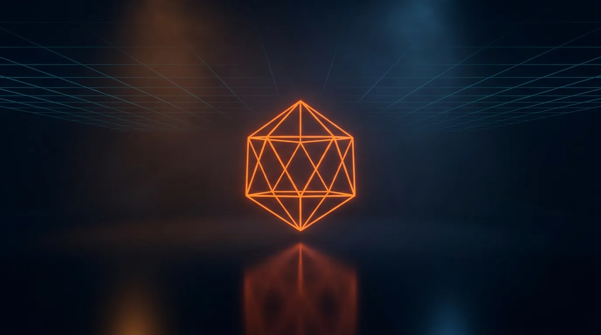

Roadmap
Where this is going
Three categories. Shipped is verifiable in the changelog, next is committed, and exploring is research that may or may not pan out. Nothing here is a pre-order pitch.
Photo Mode Pro
Shipped
The system
Controller, free camera, natural-unit adjustments, presets, supersampled capture and themed UI, then URP, HDRP and Built-in backends with the public capability system.
Reach & rigor
Minimum Unity dropped to 2021.3 LTS, IL2CPP with high stripping verified, zero-per-frame-GC guarantee, EventSystem auto-creation, scene-change safety.
Onboarding
Setup Wizard with one-click fixes, welcome window, pipeline-aware demo, self-test diagnostics, true log-stop aperture, docs site and full manual.
Next
Launch feedback round
The first post-launch update is reserved for whatever real users hit first. Reviews, support email and GitHub issues set the priority list, and fixes go through the same test gates as everything else.
Portrait & unusual aspect ratios
Hint chips can overlap on tall portrait canvases, a known v1.4 limitation. A layout rework for extreme aspect ratios is queued.
Stickers menu, fixes and more
An optional stickers menu for dressing up captures before saving, off by default and themable like the rest of the UI. v1.5 also rolls up bug fixes from launch feedback and smaller quality-of-life improvements.
Exploring
These are research areas. They're listed so you know what's on the bench, not to sell futures.
WebGL capture
Capture-to-disk doesn't exist on WebGL; a browser-download capture path is being prototyped. The rest of the photo mode already runs there; this site's demo build is proof.
Mobile touch UI
The UI is gamepad- and cursor-first today. A touch layout with gesture camera controls is under evaluation.
HDRP transparent capture
HDRP can't produce clean alpha without modifying the project's HDRP asset. Investigating a safe, opt-in path.
Beyond Photo Mode Pro
The next tool is in development
It stays unannounced until it passes the same bar as Photo Mode Pro: full tests, full docs, a store page that doesn't oversell. It gets announced here first.
support.dan.max@gmail.com
